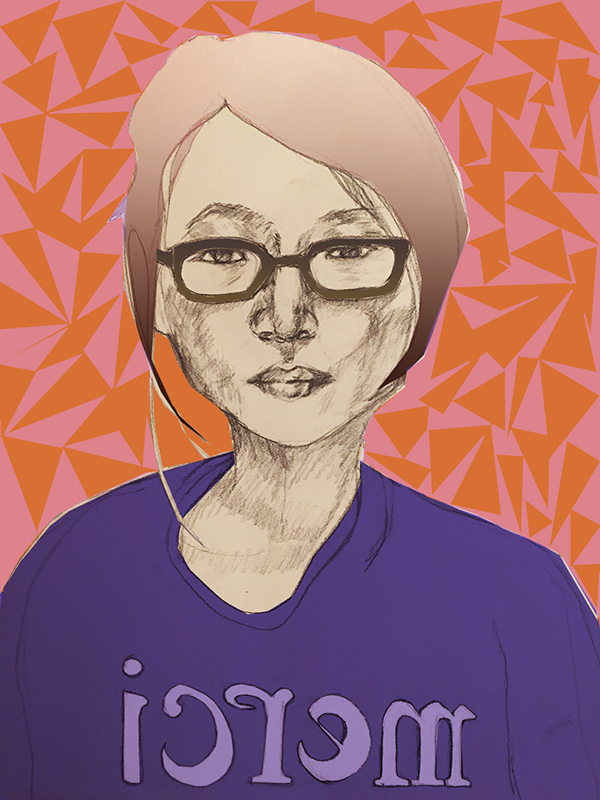

I'm a night owl. My brain wakes up around 10 a.m. and gets very animated after 6 p.m.
As a coffee and tea drinker, I feel drinking coffee is the best way to start a day and drinking green tea is the best way to end it.
I'm a front-end developer. I believe great user interface is much more than "making things pretty" , and I believe great user experience hardly requires a screen.
I have a degree in Computer Science, but I am not a computer scientist. I don't have a Arts & Humanities degree, but I am a humanist. I believe art and science are meant for each other.
My life goal is become a humanist technologist.
Appication Developer
November 2014 – PresentWeb Developer
May 2014 – October 2014Front-End Developer
March 2012 - April 2014Research Assistant
August 2010 - December 2011